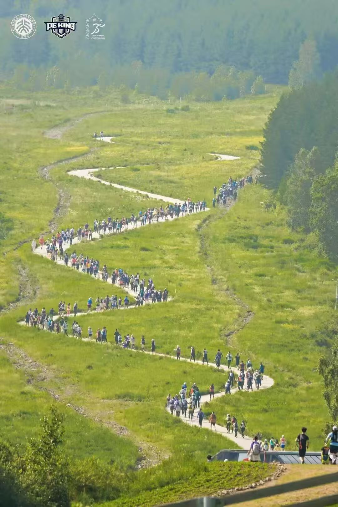
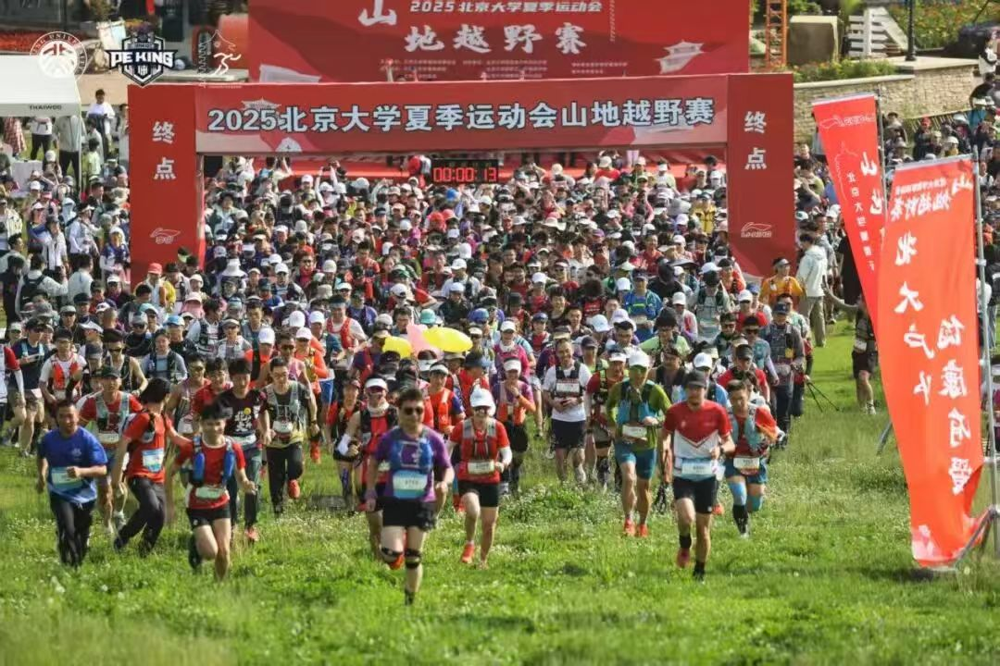

Peking University · Chongli · Mountain Trail
北京大学山地越野赛
一场从燕园精神延伸至崇礼高山草甸的越野跑赛事。选手将在林道、山脊与开阔草甸之间完成团队协作、个人挑战与家庭同行的山野旅程。
A trail-running experience where academic community meets alpine terrain, shared endurance and open mountain culture.
Race Status
下一届赛事信息待官方发布
报名、竞赛规程、关门时间、强制装备与 GPX 轨迹将以当届组委会公告为准。当前页面展示往届公开信息与赛事体验框架。
Race Categories
选择你的山野路线
三个组别覆盖竞技团队、个人入门和家庭体验。点击组别卡片，可查看路线强度、适合人群与参赛要点。
Course
崇礼高山草甸赛道
赛道位于河北崇礼太舞小镇周边，连接山谷林道、草甸小径和开阔山脊。连续起伏、天气变化和补给点间隔，让这条路线兼具校园赛事的开放气质与真实越野的挑战感。

GPX、关门时间、补给安排和强制装备请以当届竞赛规程为准。
Runner Guide
参赛信息一屏掌握
按照越野跑者最关心的顺序组织信息：赛程、装备、安全和交通。正式版本发布后，可直接替换为当届公告。
Race Week
往届安排包括赛前技术会、装备检查、分组起跑、补给服务与完赛仪式。下一届详细日程以官方通知为准。
Mandatory Gear
建议准备越野包、补水容器、防风保暖层、保温毯、满电手机、离线轨迹和个人补给。强制清单以当届手册为准。
Safety First
赛事将围绕天气、救援、补给、关门时间和熔断机制建立安全体系。选手需尊重赛道标识，按自身能力完成比赛。
Travel to Chongli
崇礼位于河北张家口，适合赛前一晚抵达并完成报到。住宿、接驳与集合信息将随正式规程发布。
Past Editions
从首届出发，走向更开放的校园山野赛事
赛事由北京大学体育运动委员会主办，体育教研部、工会、校友会等单位共同推动。它连接在校学生、教职工、校友和高校跑者，也把北大体育带到更广阔的自然场景中。
首届山地越野赛
803 人报名参与，设 23 km、10 km 和亲子体验赛，师生校友相聚河北崇礼。
第二届规模提升
设 22 km、10 km 与亲子体验赛，北大师生校友及特邀选手共 1000 余人参赛。
下一届信息待公布
报名入口、赛事手册、成绩查询和志愿者招募将在官方确认后更新。

Race Spirit
以团队、山野和共同体完成一场长距离对话
PKU Mountain Trail 不只是一场跑步比赛。它把竞技、探索和彼此守望放在同一条路线上，让每一次爬升都通向更开阔的视野。
Gallery
山野瞬间
筛选不同场景，查看赛事影像。点击图片可放大浏览。
FAQ
常见问题
以下为基于往届赛事整理的通用信息。正式规则以当届组委会发布为准。
Mini 越野赛和亲子体验赛更适合首次接触山地越野的参与者。仍建议提前进行爬升训练，并了解补给、下坡和天气应对。
团队形式强调协作、节奏控制和安全意识。往届半马组按最后一名队员通过终点时间计算团队成绩。
往届赛事以北大师生、校友为核心，同时邀请高校代表和特邀选手参与。开放范围以当届报名公告为准。